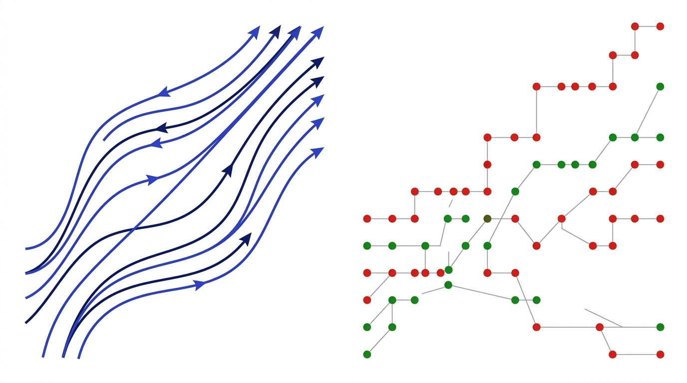

Modello Epidemiologico SIR come Catena di Markov Discreta
Autore: Francesco Castaldi • Corso: Modelli Probabilistici (518512), UniBo • A.A.: 2025/2026
1. Abstract
Il presente lavoro studia un modello epidemiologico compartimentale di tipo SIR (Suscettibili–Infetti–Rimossi) su una popolazione finita di dimensione $N$, formalizzandolo rigorosamente come una Catena di Markov a tempo discreto (DTMC) omogenea su spazio degli stati finito $E$.
L'obiettivo primario è didattico e formativo: applicare i risultati centrali della teoria dei processi stocastici discreti — definizione formale dello spazio degli stati, proprietà di Markov senza memoria, costruzione analitica della matrice stocastica di transizione $P$, partizione in stati transitori e assorbenti, estinzione quasi certa in tempo finito e risoluzione del sistema lineare dei tempi medi di assorbimento.
2. Introduzione & Inquadramento Epistemologico
La propagazione di un agente patogeno in una popolazione reale è un fenomeno intrinsecamente casuale. A differenza del classico approccio deterministico a equazioni differenziali ordinarie (Kermack-McKendrick 1927), la formulazione stocastica discreta di Bartlett (1949) tratta gli individui come entità quantizzate intere, catturando la varianza del contagio e l'estinzione in tempo finito.
💡 Tooltip Epistemologico — Perché il Modello Discreto?
Limite delle ODE: Le equazioni differenziali trattano la popolazione come un fluido continuo $S(t), I(t) \in \mathbb{R}^+$. A taglia finita, le ODE non possono descrivere l'estinzione completa perché $I(t)$ decresce asintoticamente ma non tocca mai lo zero in tempo finito ($I(t) > 0 \; \forall t < \infty$).
Punto di forza di Markov: Mantiene $S_t, I_t, R_t \in \mathbb{N}_0$. Gli stati con $I=0$ sono stati assorbenti esatti, consentendo di dimostrare che l'epidemia termina con probabilità 1 ($\mathbb{P}(\tau < \infty) = 1$).

Figura 1: Flusso continuo deterministico (ODE) vs Rete di salti probabilistici discreti (Markov).
3. Formalizzazione Matematica della Catena
3.1 Spazio di Probabilità e Spazio degli Stati
Sia $(\Omega, \mathcal{F}, \mathbb{P})$ uno spazio di probabilità con filtrazione naturale $\mathbb{F} = (\mathcal{F}_t)_{t \ge 0}$ generata dalle osservazioni del processo. Per una popolazione chiusa di taglia $N \in \mathbb{N}$, ad ogni istante discreto $t \in \mathbb{N}_0$, lo stato del sistema è il vettore tridimensionale $X_t = (S_t, I_t, R_t) \in \mathbb{N}_0^3$ vincolato dalla conservazione:
Definizione dello Spazio degli Stati
$$E = \left\{ (s, i, r) \in \mathbb{N}_0^3 : s + i + r = N \right\}$$ La cardinalità di $E$ corrisponde al numero di combinazioni con ripetizione di 3 elementi su $N$: $$|E| = \binom{N+2}{2} = \frac{(N+1)(N+2)}{2}$$ Per $N=100$, lo spazio degli stati conta $|E| = 5151$ configurazioni distinte.
3.2 Dinamica a Transizioni Binomiali Condizionatamente Indipendenti
La transizione $X_t \to X_{t+1}$ è definita dal bilancio di massa tra i nuovi contagi $C_t$ e le nuove guarigioni $G_t$:
- Nuovi Contagi: $C_t \mid \mathcal{F}_t \sim \text{Bin}\left(S_t, \; p_{\mathrm{SI}}(t)\right)$, con $p_{\mathrm{SI}}(t) = \beta \frac{I_t}{N} \in [0, 1]$.
- Nuove Guarigioni: $G_t \mid \mathcal{F}_t \sim \text{Bin}\left(I_t, \; \gamma\right)$, con $\gamma \in (0, 1]$.
Dato che $C_t \perp G_t \mid \mathcal{F}_t$, la probabilità di transizione a un passo $P(x, y) = \mathbb{P}(X_{t+1}=y \mid X_t=x)$ con $x=(s,i,r)$ e $y=(s-c, i+c-g, r+g)$ vale in forma chiusa: $$P(x, y) = \binom{s}{c}\left(\frac{\beta i}{N}\right)^c \left(1-\frac{\beta i}{N}\right)^{s-c} \cdot \binom{i}{g}\gamma^g (1-\gamma)^{i-g}$$
Proprietà di Markov & Struttura Martingala
Il processo $\{X_t\}_{t \ge 0}$ è una catena di Markov omogenea. Il drift locale del compartimento infetti è: $$\mathbb{E}[\Delta I_t \mid \mathcal{F}_t] = \mathbb{E}[C_t - G_t \mid \mathcal{F}_t] = I_t \left( \beta \frac{S_t}{N} - \gamma \right) = \gamma I_t \left( R_0 \frac{S_t}{N} - 1 \right)$$ Per la decomposizione di Doob per semimartingale discrete: $$I_t = I_0 + M_t + A_t$$ dove $A_t = \sum_{k=0}^{t-1} \mathbb{E}[\Delta I_k \mid \mathcal{F}_k]$ è il compensatore deterministico prevedibile e $M_t$ è una martingala locale a media nulla.
4. Esempio Analitico e Struttura Matriciale ($N=3$)
Per $N=3$, $|E| = 10$. Partizioniamo lo spazio negli stati assorbenti $\mathcal{A} = \{(s,0,r) \in E\}$ ($d_A = 4$) e transitori $\mathcal{T} = \{(s,i,r) \in E : i > 0\}$ ($d_T = 6$). La matrice stocastica $P \in \mathbb{R}^{10 \times 10}$ assume la forma canonica a blocchi: $$P = \begin{pmatrix} Q_{6 \times 6} & R_{6 \times 4} \\ 0_{4 \times 6} & I_{4 \times 4} \end{pmatrix}$$

Figura 2: Heatmap della matrice di transizione $P$ ($N=3$, colormap Blues). I 4 stati assorbenti $(3,0,0)^*, (2,0,1)^*, (1,0,2)^*, (0,0,3)^*$ sono evidenziati in blu scuro con valore 1.00 sulla diagonale; le aree bianche indicano transizioni a probabilità nulla (aciclicità: $R_{t+1} \ge R_t$).
5. Simulazione Monte Carlo e Risultati Numerici
Con i parametri di benchmark $N=100$, $\beta=0.20$, $\gamma=0.10$ ($R_0 = 2.0$), $I_0=5$ e $M=1000$ replicazioni con seed riproducibile 42, si ottengono le evidenze empiriche validate:

Traiettoria Singola: picco $I=18$ al giorno $78$, estinzione a $\tau=124$.

Media Monte Carlo $\mathbb{E}[X_t] \pm 1\sigma$ su 1000 simulazioni.

Ritratto di Fase $(S, I)$ con soglia analitica $S^* = N/R_0 = 50$.

Distribuzione Attacco Finale $R_\infty$ (Media $76.6\%$).
6. Analisi Teorica: Teorema di Assorbimento & First-Step Analysis
Teorema — Assorbimento Quasi Certo in Tempo Finito
Sia $\tau = \inf\{t \ge 0 : X_t \in \mathcal{A}\} = \inf\{t \ge 0 : I_t = 0\}$ il tempo di primo ingresso nello spazio assorbente. Allora: $$\mathbb{P}_i(\tau < \infty) = 1, \quad \forall i \in \mathcal{T}$$ Dimostrazione: Poiché $E$ è finito e tutti gli stati in $\mathcal{T}$ sono transitori ($\rho(Q) < 1$), la serie delle probabilità di permanenza converge: $\sum_{t=0}^\infty \mathbb{P}_i(X_t \in \mathcal{T}) = \sum_{t=0}^\infty (Q^t \mathbf{1})_i = ((I-Q)^{-1}\mathbf{1})_i < \infty$. Per il Lemma di Borel-Cantelli, il numero di visite a $\mathcal{T}$ è quasi certamente finito, garantendo $\tau < \infty$ q.c.
First-Step Analysis per il Tempo Medio di Estinzione
Sia $\mathbf{t} = (\mathbb{E}_i[\tau])_{i \in \mathcal{T}}$ il vettore dei tempi medi. Condizionando al primo passo: $$t_i = 1 + \sum_{j \in \mathcal{T}} Q(i,j) t_j + \sum_{k \in \mathcal{A}} R(i,k) \cdot 0 \iff \mathbf{t} = \mathbf{1} + Q \mathbf{t} \iff (I - Q)\mathbf{t} = \mathbf{1}$$ da cui si ricava la soluzione esatta mediante la matrice fondamentale $N_{\text{fund}} = (I-Q)^{-1} = \sum_{k=0}^\infty Q^k$: $$\mathbf{t} = (I - Q)^{-1} \mathbf{1}$$ La matrice delle probabilità di assorbimento nello stato $k \in \mathcal{A}$ partendo da $i \in \mathcal{T}$ è data da: $$B = (I - Q)^{-1} R \in \mathbb{R}^{d_T \times d_A}$$
7. Teorema del Limite Fluido Continuo (Kurtz 1970)
Riscalando il processo stocastico mediante $x^{(N)}(t) = \frac{X_t}{N} = (s(t), i(t), r(t))$, per il Teorema del Limite Funzionale di Kurtz (1970), per ogni orizzonte $T > 0$: $$\sup_{t \in [0, T]} \left\| x^{(N)}(t) - x(t) \right\| \xrightarrow[N \to \infty]{\text{q.c.}} 0$$ dove $x(t) = (s(t), i(t), r(t))$ è l'unica soluzione del sistema continuo di Kermack-McKendrick: $$\begin{cases} \dot{s}(t) = -\beta s i \\ \dot{i}(t) = (\beta s - \gamma) i = \gamma (R_0 s - 1) i \\ \dot{r}(t) = \gamma i \end{cases}$$

Figura 3: Limite fluido continuo (ODE) vs Media Monte Carlo ($N=100$). Il picco continuo è a $18.3\%$, mentre la media MC campionaria è a $16.4\%$ a causa della desincronizzazione temporale.
7.1 Integrazione Analitica nel Piano delle Fasi
Eliminando la variabile temporale $t$ mediante rapporto di derivate: $$\frac{di}{ds} = \frac{\beta s i - \gamma i}{-\beta s i} = -1 + \frac{\gamma}{\beta s} = -1 + \frac{1}{R_0 s}$$ Integrando con condizione iniziale $(s_0, i_0)$: $$i(s) = i_0 + (s_0 - s) + \frac{1}{R_0}\ln\left(\frac{s}{s_0}\right)$$ Il massimo infetti si ottiene annullando la derivata: $\frac{di}{ds} = 0 \iff s^* = \frac{1}{R_0} \implies S^* = \frac{N}{R_0}$.
8. Sensibilità Parametrica & Soglia Epidemica $R_0$

Il numero di riproduzione di base $R_0 = \beta / \gamma$ governa la biforcazione:
- Regime Subcritico ($R_0 \le 1$): $\mathbb{E}[\Delta I_0] \le 0$, il virus decade monotonicamente e si estingue rapidamente senza formare alcuna ondata epidemica.
- Regime Sovracritico ($R_0 > 1$): $\mathbb{E}[\Delta I_0] > 0$, l'epidemia cresce esponenzialmente nella fase iniziale fino a raggiungere il picco quando $S_t$ scende sotto la soglia critica $S^* = N/R_0$.
9. Guida alle Domande Orali & Lavagna
❓ Domanda: Perché la catena non ammette un'unica misura stazionaria invariante?
Risposta: Poiché la catena non è irriducibile e possiede $N+1$ stati assorbenti disgiunti (tutti quelli con $I=0$). Ogni vettore della base canonica $\delta_{(s, 0, r)}$ con $s+r=N$ è una misura invariante ($P \delta_x = \delta_x$). L'insieme delle misure stazionarie è il simplesso convesso generato da questi $N+1$ stati assorbenti.
❓ Domanda: Come si dimostra alla lavagna la First-Step Analysis per il tempo medio?
$$k(x) = \mathbb{E}_x[\tau] = \sum_{y \in E} P(x, y) \mathbb{E}_x[\tau \mid X_1 = y] = \sum_{y \in E} P(x, y) [1 + k(y)] = 1 + \sum_{y \in \mathcal{T}} P(x, y) k(y)$$ sfruttando il fatto che per $y \in \mathcal{A}$, $k(y) = \mathbb{E}_y[\tau] = 0$. In notazione matriciale compatta: $\mathbf{t} = \mathbf{1} + Q\mathbf{t} \iff (I-Q)\mathbf{t} = \mathbf{1}$.